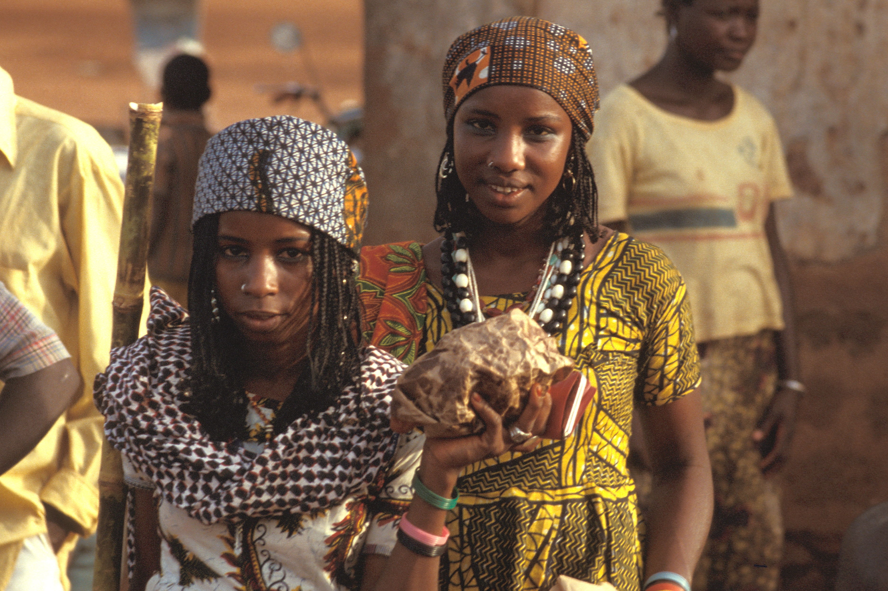

É difícil pensarmos que pessoas são excluídas do meio social em razão das características físicas que possuem, como cor da pele, cor dos olhos, altura, peso e formação física. Já nascemos com essas características e não podemos, de certa forma, ser culpados por tê-las.
Veja mais...
Hoje é comum vermos anúncios em jornais, de empresas contratando essas pessoas, sendo que de acordo com o número de funcionários da empresa, existe uma cota, uma quantidade de contratação exigida por lei. Uma empresa com até 200 funcionários deve ter em seu quadro 2% de portadores de deficiência (ou reabilitados pela Previdência Social); as empresas de 201 a 500 empregados, 3%; as empresas com 501 a 1.000 empregados, 4%; e mais de 1.000 empregados, 5%.
Veja mais...E é bom lembrar que as diferenças se fazem iguais quando essas pessoas são colocadas em um grupo que as aceite, pois nos acrescentam valores morais e de respeito ao próximo, com todos tendo os mesmos direitos e recebendo as mesmas oportunidades diante da vida.
Veja mais...
Embora esse estatuto assegure a acessibilidade, acesso à informação e comunicação, tecnologia assistida, direito a participação na vida pública e política, ciência e tecnologia e a justiça, os desafios que as pessoas com algum grau de limitação tem que enfrentar ainda são muitos.
Veja mais...No Brasil, muitos deficientes físicos ainda são vistos com indiferença. O preconceito ainda é visível, a ergonomia das cidades não atendem por completo as pessoas cegas, idosas, cadeirantes e com outros tipos de deficiência, muitas empresas de transporte público não renovaram suas frotas por completo, entre outras dificuldades.
Veja mais...
Felizmente, existem diversos projetos com foco na inclusão social atualmente. Fundações, ONGs e programas do governo trabalham incessantemente para que o Estatuto seja cumprido e esses indivíduos possam, enfim, viver com dignidade em nosso país.
Veja mais...